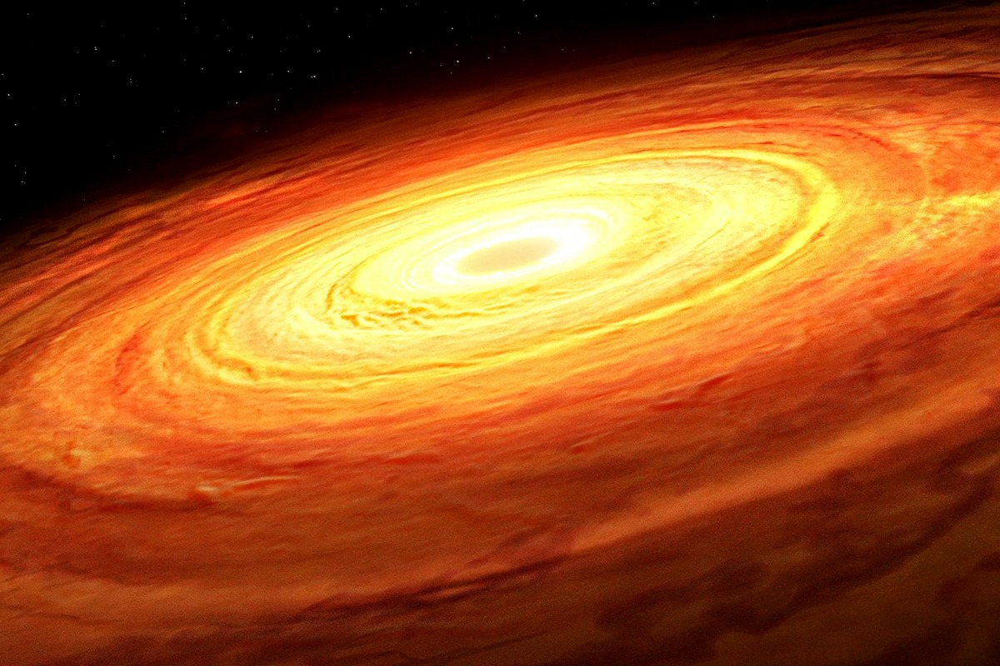
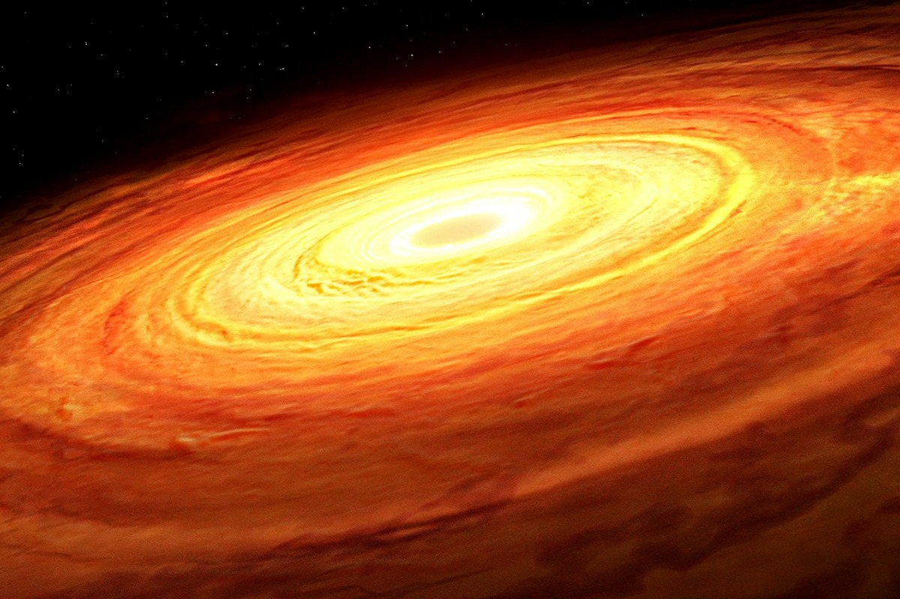
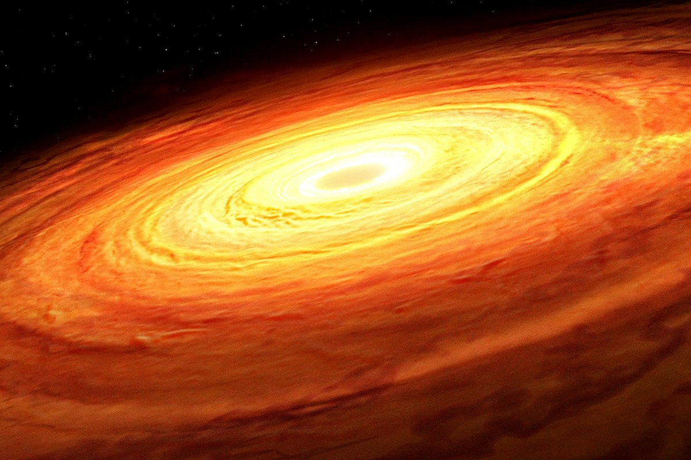

Zwarte gaten zijn objecten in de ruimte met een extreem sterke zwaartekracht. Ze ontstaan wanneer een ster aan het einde van zijn levenscyclus instort. Dit veroorzaakt een gebied waar de zwaartekracht zo sterk is dat niets, zelfs licht, eraan kan ontsnappen.
Een zwart gat bestaat uit drie belangrijke onderdelen: de singulariteit, de event horizon, en de accretieschijf. Wetenschappers hebben veel geleerd over zwarte gaten, maar er blijven veel vragen over deze mysterieuze objecten in de ruimte.
De term "zwart gat" werd voor het eerst bedacht door de natuurkundige John Archibald Wheeler in 1967. Sindsdien hebben onderzoekers het fenomeen verder bestudeerd en ontdekt dat zwarte gaten in verschillende groottes voorkomen, van kleine zwarte gaten tot superzware exemplaren in het centrum van sterrenstelsels.
